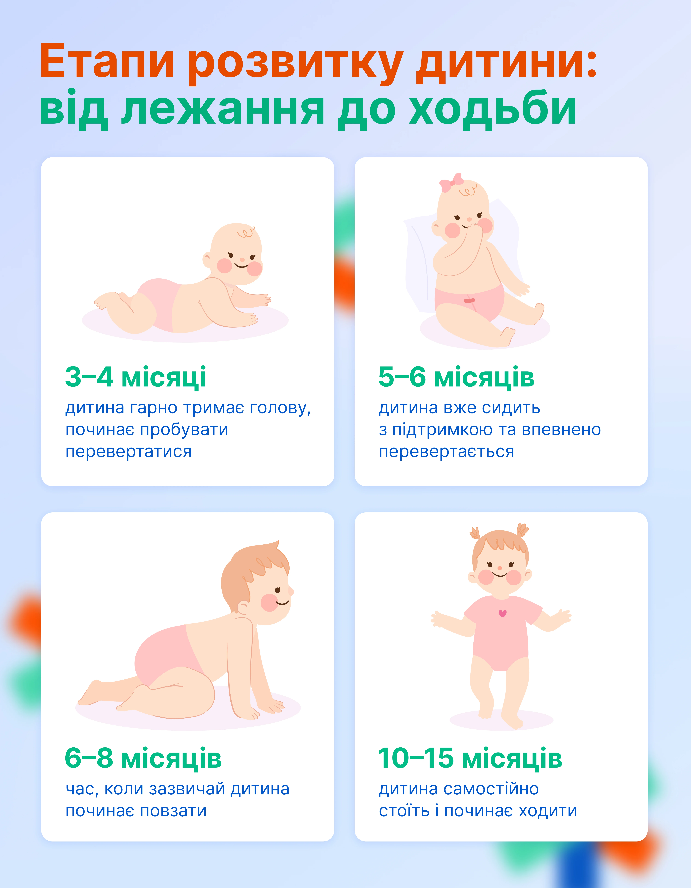

╔═══❖•ೋ° РОЗВИТОК °ೋ•❖═══╗
Розвиток дитини відбувається поступово, проходячи різні етапи, кожен із яких має унікальні риси та особливості. У цьому матеріалі ми розглядаємо ключові вікові зміни, розвиток навичок, а також способи оцінити, чи гармонійно зростає ваш малюк, щоб ви могли уникнути зайвих переживань і насолоджуватися його успіхами
『✦』Розвиток у 3\6\9\12
· . * .. . °·. · ✦ ·* . • · •. ✶˚ . ·*✧* ˚ · . ·* . ✵. ✧✵ .· ✵ ✫˚ · · .
У цей період дитина починає не лише реагувати на турботу, але й активно взаємодіяти з дорослими. Саме на цьому етапі з'являється чарівна соціальна усмішка, яка радує батьків. Малюк все довше споглядає обличчя, заспокоюється від знайомого голосу, а також починає гулити й видавати звуки не лише в моменти дискомфорту. Ближче до 3–4 місяців ви помітите, як ваш малюк з цікавістю повертає голову на звук голосу, уважно слідкує за рухами дорослих і намагається утримувати ваш погляд або звертати увагу звуками.
Це також період суттєвого та помітного прогресу в моторному розвитку:
- дитина впевненіше тримає голову, коли лежить на животі
- активно рухає ручками та ніжками
- починає ненадовго розкривати кисті
- підносить руки до рота
- ближче до 4 місяців здатна більш рівно тримати голову, коли її беруть на руки
Саме зараз важливо приділяти малюкові час і стимулювати його розвиток через прості щоденні дії. Говоріть із дитиною ніжним тоном, відповідайте їй усмішкою, співайте пісеньки або показуйте яскраві предмети з контрастними кольорами. Не забувайте створювати умови для гри на підлозі та забезпечувати безпечне викладання на живіт. Саме такі регулярні, теплі контакти сприяють гармонійному розвитку вашого маляти.
Крім догляду, у цьому віці важливо запланувати деякі медичні обстеження для оцінки фізичного стану малюка. Рекомендується пройти нейросонографію, УЗД внутрішніх органів, ехо-КГ і УЗД кульшових суглобів. Це допоможе переконатися у здоров’ї дитини й вчасно виявити можливі особливості розвитку.
У цьому періоді дитина справді починає вражати своїми дедалі активнішими діями та реакціями. Вона досліджує світ не лише за допомогою очей і вух, але й активно користується ручками та ротиком для вивчення оточення. Хапання іграшок, спроби підтягнути їх ближче, веселі звуки та щирий сміх — усе це стає частиною її щоденного життя.
На початку 4-го місяця більшість немовлят можуть тримати голову самостійно під час підняття в вертикальне положення, посміхатися у відповідь і "гукати" на спілкування з дорослими. До 6 місяців малюки радують ще більш яскравими моментами: вони починають сміятися вголос, із зачаруванням розглядати своє відображення у дзеркалі, впевнено хапати цікаві предмети і досліджувати їх своїм улюбленим способом — через рот.
- Малюк вчиться тягнутися до іграшок і схоплювати їх.
- Лежачи на животі, вперто підпирається на передпліччя або навіть повністю випрямляє руки.
- Починає перевертатися з живота на спину, додаючи динаміки у рухи.
- Сидячи з підтримкою, спирається на руки для більшої стійкості.
- Активно шукає уваги близьких: радісно сміється, видає белькіт і жваво реагує на ваші розмови.
Десь на порозі півроку стає актуальним ще один великий крок у розвитку — початок прикорму. Але як зрозуміти, що ваш малюк готовий до нових смаків? Ось кілька важливих ознак:
- Дитина добре тримає голову і може сидіти з підтримкою.
- Рефлекс виштовхування твердої їжі язиком поступово зникає.
- Помітний інтерес до їжі: маля уважно стежить за тим, що й як ви їсте, може простягати ручки до вашої тарілки.
Всесвітня організація охорони здоров’я рекомендує вводити прикорм у віці 6 місяців, зберігаючи грудне годування як основну частину раціону. Спершу це мають бути пюреподібні та м'які продукти, поступово переходячи до більш твердої консистенції відповідно до вікових можливостей малюка.
Не забувайте також про регулярні огляди: між 5 та 6 місяцями рекомендується зробити повторне УЗД кульшових суглобів і відвідати дитячого ортопеда. А на 6 місяці заплануйте консультацію невролога та офтальмолога, щоб переконатися, що розвиток вашого малюка відбувається гармонійно.
Ці важливі перші кроки у світі — неоціненний досвід для дитини й гордість для батьків!
Цей період сповнений нових відкриттів та яскравих змін у розвитку малюка, які легко помітити щодня. Дитина починає більш активно рухатися, впевнено сидіти, а також захоплено досліджувати предмети. Ще вчора іграшка просто лежала на підлозі, а сьогодні вже летить у повітря або перекладається з рук у руки. Емоційні прояви також стають більш виразними: малюк реагує тривогою при появі незнайомої людини, простягає ручки до рідних і помітно сумує, якщо батьки покидають кімнату.
До дев’ятимісячного віку більшість дітей вже впевнено:
- сідають без підтримки
- переходять у сидяче положення самостійно
- перекладають предмети з однієї руки в іншу
- хапають їжу пальчиками, підгрібаючи її
- впізнають своє ім'я та реагують на нього
- активно лепечуть, тренуючи мовлення
- із задоволенням граються в улюблену гру "ку-ку"
У цьому віці маленькі дослідники проявляють дедалі більший інтерес до їжі. Відповідно до рекомендацій ВООЗ, у 6–8 місяців прикорм дають 2–3 рази на день, а з 9–11 місяців – 3–4 рази на день. Крім того, малюки вже часто справляються не лише з пюре, а й із м’якою їжею невеликими шматочками. Головне — щоб їжа була безпечною для жування та ковтання.
Наближаючись до свого першого дня народження, дитина стає більш самостійною і спритною. Вона починає краще розуміти звернену мову, наслідує жести, активно шукає заховані предмети, дістає та кладе речі назад у коробки. Потроху вдосконалюється й моторика: малюк вже встає, обпершись на опору, крокує уздовж меблів і вправно хапає маленькі шматочки їжі двома пальчиками. Типові досягнення у 12 місяців:
- разом із дорослим грає в прості ігри
- махає рукою на прощання
- розуміє базові заборони на кшталт "не можна" або "ні"
- вигадує власне слово для позначення мами, тата чи інших близьких людей
- знаходить заховані предмети
- самостійно підтягується до стоячої позиції та ходить, тримаючись за опору
Раціон дитини до року вже майже схожий на дорослий, однак існують певні обмеження. Категорично забороняється мед (через ризик ботулізму), сіль, цукор, цілі горіхи або виноградини (через можливість задихнутися).
Хоча самостійна ходьба частіше стає новою навичкою ближче до першого дня народження, але це не обов’язкова умова. Якщо ваш малюк ще не зробив своїх перших кроків — не переймайтеся, у кожної дитини є свій темп досягнення нових висот.
Коли звертатися до педіатра
Уважне спостереження за розвитком дитини є надзвичайно важливим, тому регулярні профілактичні огляди слід проводити своєчасно. Але якщо у вас виникають найменші занепокоєння щодо стану чи поведінки малюка, не варто зволікати із візитом до лікаря. Ось перелік ситуацій, які можуть бути приводом для консультації з педіатром:
- У перші тижні життя дитина не реагує на гучні звуки, не фіксує погляд на близьких предметах, має проблеми зі смоктанням, здається надто млявою або, навпаки, постійно напруженою.
- До 2–4 місяців у дитини немає усмішки у відповідь, вона не звертає уваги на обличчя людей, не видає звуків, не тримає голову, лежачи на животі.
- У 6 місяців малюк не простягає руки до іграшок, не сміється та не проявляє інтересу до взаємодії.
- У 9 місяців він не реагує на своє ім’я, не може сидіти без підтримки або не белькоче різними складами.
- У рік виявляється відсутність жестів на кшталт «па-па», малюк не реагує на прості заборони, не піднімається біля опори чи не використовує пінцетний захват.
Окремо варто зазначити: якщо дитина раптово втратила якусь набуту навичку, слід негайно звернутися до лікаря.
Перший рік життя дитини — це період стрімкого розвитку, який неможливо вписати у жорсткі рамки таблиць чи шаблонів. Важливіше оцінювати загальну динаміку: чи з’являються нові здібності, чи демонструє дитина цікавість до навколишнього світу і людей, чи прогресує її розвиток. Батькам рекомендується активно взаємодіяти з малюком, багато спілкуватися, створювати безпечний простір для руху та не форсувати вміння, до яких він ще не готовий. І, звісно, не варто відкладати звернення до педіатра, якщо щось викликає тривогу.
Список джерел:
- Періоди дитячого віку: їх характеристика та особливості. Режим доступу: https://biomed.knu.ua/images/stories/Kafedry/PAG/Library/Periody_dytiachoho_viku_Metodychni_rekomendatsii_compressed.pdf
- Ріст і розвиток дитини: основні закономірності та зміни при патології. Режим доступу: https://dspace.bsmu.edu.ua/bitstream/123456789/26498/1/Bezruk%20V.V.%20ta%20in.%20Rist%20i%20rozvytok%20dytyny_2025.pdf
- Ранній розвиток дитини. Режим доступу: https://www.unicef.org/ukraine/media/13461/file/Early%20child%20development.pdf
- 1 рік: основні показники розвитку дитини. Режим доступу: https://childdevelop.com.ua/articles/develop/6560/
· . * .. . °·. · ✦ ·* . • · •. ✶˚ . ·*✧* ˚ · . ·* . ✵. ✧✵ .· ✵ ✫˚ · · . 2–3 місяці життя малюка – час захопливих змін
У цей період дитина починає не лише реагувати на турботу, але й активно взаємодіяти з дорослими. Саме на цьому етапі з'являється чарівна соціальна усмішка, яка радує батьків. Малюк все довше споглядає обличчя, заспокоюється від знайомого голосу, а також починає гулити й видавати звуки не лише в моменти дискомфорту. Ближче до 3–4 місяців ви помітите, як ваш малюк з цікавістю повертає голову на звук голосу, уважно слідкує за рухами дорослих і намагається утримувати ваш погляд або звертати увагу звуками.
Це також період суттєвого та помітного прогресу в моторному розвитку:
- дитина впевненіше тримає голову, коли лежить на животі
- активно рухає ручками та ніжками
- починає ненадовго розкривати кисті
- підносить руки до рота
- ближче до 4 місяців здатна більш рівно тримати голову, коли її беруть на руки
Саме зараз важливо приділяти малюкові час і стимулювати його розвиток через прості щоденні дії. Говоріть із дитиною ніжним тоном, відповідайте їй усмішкою, співайте пісеньки або показуйте яскраві предмети з контрастними кольорами. Не забувайте створювати умови для гри на підлозі та забезпечувати безпечне викладання на живіт. Саме такі регулярні, теплі контакти сприяють гармонійному розвитку вашого маляти.
Крім догляду, у цьому віці важливо запланувати деякі медичні обстеження для оцінки фізичного стану малюка. Рекомендується пройти нейросонографію, УЗД внутрішніх органів, ехо-КГ і УЗД кульшових суглобів. Це допоможе переконатися у здоров’ї дитини й вчасно виявити можливі особливості розвитку.
4–6 місяців: час нових досягнень і відкриттів
У цьому періоді дитина справді починає вражати своїми дедалі активнішими діями та реакціями. Вона досліджує світ не лише за допомогою очей і вух, але й активно користується ручками та ротиком для вивчення оточення. Хапання іграшок, спроби підтягнути їх ближче, веселі звуки та щирий сміх — усе це стає частиною її щоденного життя.
На початку 4-го місяця більшість немовлят можуть тримати голову самостійно під час підняття в вертикальне положення, посміхатися у відповідь і "гукати" на спілкування з дорослими. До 6 місяців малюки радують ще більш яскравими моментами: вони починають сміятися вголос, із зачаруванням розглядати своє відображення у дзеркалі, впевнено хапати цікаві предмети і досліджувати їх своїм улюбленим способом — через рот.
Що характерно для цього віку?
- Малюк вчиться тягнутися до іграшок і схоплювати їх.
- Лежачи на животі, вперто підпирається на передпліччя або навіть повністю випрямляє руки.
- Починає перевертатися з живота на спину, додаючи динаміки у рухи.
- Сидячи з підтримкою, спирається на руки для більшої стійкості.
- Активно шукає уваги близьких: радісно сміється, видає белькіт і жваво реагує на ваші розмови.
Десь на порозі півроку стає актуальним ще один великий крок у розвитку — початок прикорму. Але як зрозуміти, що ваш малюк готовий до нових смаків? Ось кілька важливих ознак:
- Дитина добре тримає голову і може сидіти з підтримкою.
- Рефлекс виштовхування твердої їжі язиком поступово зникає.
- Помітний інтерес до їжі: маля уважно стежить за тим, що й як ви їсте, може простягати ручки до вашої тарілки.
Всесвітня організація охорони здоров’я рекомендує вводити прикорм у віці 6 місяців, зберігаючи грудне годування як основну частину раціону. Спершу це мають бути пюреподібні та м'які продукти, поступово переходячи до більш твердої консистенції відповідно до вікових можливостей малюка.
Не забувайте також про регулярні огляди: між 5 та 6 місяцями рекомендується зробити повторне УЗД кульшових суглобів і відвідати дитячого ортопеда. А на 6 місяці заплануйте консультацію невролога та офтальмолога, щоб переконатися, що розвиток вашого малюка відбувається гармонійно.
Ці важливі перші кроки у світі — неоціненний досвід для дитини й гордість для батьків!
7–9 місяців
Цей період сповнений нових відкриттів та яскравих змін у розвитку малюка, які легко помітити щодня. Дитина починає більш активно рухатися, впевнено сидіти, а також захоплено досліджувати предмети. Ще вчора іграшка просто лежала на підлозі, а сьогодні вже летить у повітря або перекладається з рук у руки. Емоційні прояви також стають більш виразними: малюк реагує тривогою при появі незнайомої людини, простягає ручки до рідних і помітно сумує, якщо батьки покидають кімнату.
До дев’ятимісячного віку більшість дітей вже впевнено:
- сідають без підтримки
- переходять у сидяче положення самостійно
- перекладають предмети з однієї руки в іншу
- хапають їжу пальчиками, підгрібаючи її
- впізнають своє ім'я та реагують на нього
- активно лепечуть, тренуючи мовлення
- із задоволенням граються в улюблену гру "ку-ку"
У цьому віці маленькі дослідники проявляють дедалі більший інтерес до їжі. Відповідно до рекомендацій ВООЗ, у 6–8 місяців прикорм дають 2–3 рази на день, а з 9–11 місяців – 3–4 рази на день. Крім того, малюки вже часто справляються не лише з пюре, а й із м’якою їжею невеликими шматочками. Головне — щоб їжа була безпечною для жування та ковтання.
10–12 місяців
Наближаючись до свого першого дня народження, дитина стає більш самостійною і спритною. Вона починає краще розуміти звернену мову, наслідує жести, активно шукає заховані предмети, дістає та кладе речі назад у коробки. Потроху вдосконалюється й моторика: малюк вже встає, обпершись на опору, крокує уздовж меблів і вправно хапає маленькі шматочки їжі двома пальчиками. Типові досягнення у 12 місяців:
- разом із дорослим грає в прості ігри
- махає рукою на прощання
- розуміє базові заборони на кшталт "не можна" або "ні"
- вигадує власне слово для позначення мами, тата чи інших близьких людей
- знаходить заховані предмети
- самостійно підтягується до стоячої позиції та ходить, тримаючись за опору
Раціон дитини до року вже майже схожий на дорослий, однак існують певні обмеження. Категорично забороняється мед (через ризик ботулізму), сіль, цукор, цілі горіхи або виноградини (через можливість задихнутися).
Хоча самостійна ходьба частіше стає новою навичкою ближче до першого дня народження, але це не обов’язкова умова. Якщо ваш малюк ще не зробив своїх перших кроків — не переймайтеся, у кожної дитини є свій темп досягнення нових висот.
Коли звертатися до педіатра
Уважне спостереження за розвитком дитини є надзвичайно важливим, тому регулярні профілактичні огляди слід проводити своєчасно. Але якщо у вас виникають найменші занепокоєння щодо стану чи поведінки малюка, не варто зволікати із візитом до лікаря. Ось перелік ситуацій, які можуть бути приводом для консультації з педіатром:
- У перші тижні життя дитина не реагує на гучні звуки, не фіксує погляд на близьких предметах, має проблеми зі смоктанням, здається надто млявою або, навпаки, постійно напруженою.
- До 2–4 місяців у дитини немає усмішки у відповідь, вона не звертає уваги на обличчя людей, не видає звуків, не тримає голову, лежачи на животі.
- У 6 місяців малюк не простягає руки до іграшок, не сміється та не проявляє інтересу до взаємодії.
- У 9 місяців він не реагує на своє ім’я, не може сидіти без підтримки або не белькоче різними складами.
- У рік виявляється відсутність жестів на кшталт «па-па», малюк не реагує на прості заборони, не піднімається біля опори чи не використовує пінцетний захват.
Окремо варто зазначити: якщо дитина раптово втратила якусь набуту навичку, слід негайно звернутися до лікаря.
Перший рік життя дитини — це період стрімкого розвитку, який неможливо вписати у жорсткі рамки таблиць чи шаблонів. Важливіше оцінювати загальну динаміку: чи з’являються нові здібності, чи демонструє дитина цікавість до навколишнього світу і людей, чи прогресує її розвиток. Батькам рекомендується активно взаємодіяти з малюком, багато спілкуватися, створювати безпечний простір для руху та не форсувати вміння, до яких він ще не готовий. І, звісно, не варто відкладати звернення до педіатра, якщо щось викликає тривогу.
Список джерел:
- Періоди дитячого віку: їх характеристика та особливості. Режим доступу: https://biomed.knu.ua/images/stories/Kafedry/PAG/Library/Periody_dytiachoho_viku_Metodychni_rekomendatsii_compressed.pdf
- Ріст і розвиток дитини: основні закономірності та зміни при патології. Режим доступу: https://dspace.bsmu.edu.ua/bitstream/123456789/26498/1/Bezruk%20V.V.%20ta%20in.%20Rist%20i%20rozvytok%20dytyny_2025.pdf
- Ранній розвиток дитини. Режим доступу: https://www.unicef.org/ukraine/media/13461/file/Early%20child%20development.pdf
- 1 рік: основні показники розвитку дитини. Режим доступу: https://childdevelop.com.ua/articles/develop/6560/
『✦』Повзання, сидіння, ходіння, говір
Перш ніж дитина почне сидіти чи повзати, вона проходить кілька ключових етапів розвитку. “Кожний етап розвитку дитини від лежання до ходьби НЕ можна просто перескочити”, — наголошує Євген Буньковський.
Кожна дитина унікальна, але є певні орієнтири у фізичному розвитку, які допомагають зрозуміти, чи все відбувається за планом. Ось основні етапи:
- У 3–4 місяці малюк впевнено тримає голову та робить спроби перевертатися.
- У 5–6 місяців вже сидить із підтримкою та активно перевертається.
- У 6–8 місяців дитина зазвичай починає освоювати повзання.
- У 10–15 місяців настає час самостійного стояння та перших кроків.
Експерти підкреслюють важливість поступовості у цьому процесі. Реабілітолог Євген зазначає, що кожен етап необхідний для гармонійного розвитку координації.
Як зрозуміти, що дитина готова сідати
Здатність сісти — це не просто черговий етап у розвитку, а важливий крок вперед. Щоб переконатися, що малюк готовий, звертайте увагу на такі ознаки:
- добре тримає голову
- вміє самостійно перевертатися
- може недовго сидіти з підтримкою або без неї.
Якщо ж батьки помічають, що малюк зовсім не проявляє інтересу до того, щоб сідати або виконувати інші етапи рухового розвитку, варто звернутись до спеціаліста. Важливо пам’ятати: незначна затримка на кілька тижнів ще не привід для тривоги, адже розвиток у кожної дитини індивідуальний.
Чому повзання таке важливе
Повзання — це більше ніж просто пересування, це базова навичка для загального розвитку дитини. Ось які переваги воно має:
- активізує роботу обох півкуль мозку; - сприяє розвитку координації, коли рухи правої руки та лівої ноги працюють синхронно; - розвиває когнітивні здібності, мовлення та інтелектуальні навички.
Фахівець наголошує, що пропуск цього етапу може вплинути на формування координації, рівноваги та навіть мовлення. Тому варто звертати особливу увагу на ці моменти.
Види повзання у дітей
Існують різні види повзання, і всі вони важливі для формування фізичних та розумових здібностей:
- Симетричне повзання — це перші невпевнені спроби, коли права рука рухається одночасно з правою ногою.
- Асиметричне повзання — більш ефективний спосіб пересування: задіюється права рука і ліва нога одночасно або навпаки.
За словами експертів, етап повзання має вирішальне значення для подальшого розвитку дитини. Його пропуск може уповільнити перехід до ходьби та викликати труднощі з координацією.
Як правильно підтримувати розвиток малюка
Деякі батьки намагаються пришвидшити природний процес — наприклад, саджають дитину раніше чи стимулюють її ходіння тримаючи за руки. Але важливо дотримуватися природного ходу подій:
- Не квапте малюка до дій, до яких він ще не готовий.
- Дайте дитині час і можливість зміцнити м’язи природним шляхом.
- Дотримуйтесь базової послідовності етапів: утримання голови, перевертання, сидіння, повзання та лише потім — ходьба.
Як підсумував Євген, пропуск будь-якого етапу розвитку може негативно позначитись на координації рухів та роботі мозку дитини. Тож терпіння і уважне спостереження за малюком — найкращі союзники у цій справі.
Коли слід звернутися до реабілітолога?
Є певні тривожні сигнали, які можуть вказувати на необхідність консультації спеціаліста з реабілітації. Якщо ви помітили:
- **Відставання у розвитку.** Наприклад, ваша дитина не може тримати голову вже у 4 місяці.
- **Млявість.** Немовля не проявляє зацікавленості до рухів чи іграшок.
- **Надмірну напруженість.** Дитинка тримає ручки й ніжки напруженими або активно опирається спробам змінити її положення.
- **Ваша інтуїція.** Як батьки, ви можете відчувати, що щось іде не так. Довіряйте собі та не відкладайте питання.
Спеціалісти завжди помічають перші ознаки, і професійна консультація допоможе визначити, чи потрібна серйозна допомога.
Чи можливо надолужити пропущені етапи розвитку?
Пропущені стадії, як-от навчання повзати чи сидіти, ще не вирок. Є цілий набір вправ, які спрямовані на компенсацію втраченого:
- сенсорні ігри й вправи
- завдання для координації рухів кінцівок
- робота з використанням м’ячів, фітболів та спеціальних балансувальних пристроїв.
Чим раніше розпочати такі заняття, тим більше шансів отримати хороший результат. Для здорових малюків розвиток відбувається природно, але дітям із неврологічними проблемами краще починати роботу з реабілітологом уже з трьох місяців.
Як фізичний розвиток впливає на мозок? Рухи — це більше, ніж просто фізична активність. Вони є потужним інструментом розвитку мозку дитини:
- Фізичні вправи стимулюють сенсорні рецептори.
- Паралельно розвиваються когнітивні навички, мовлення й цікавість до навколишнього світу.
- Правильний розвиток рухових функцій формує здорову поставу та гарну координацію.
Через рух дитина пізнає світ навколо себе. Якщо пропустити важливі етапи, її мозок може недоотримати критично важливий сенсорний досвід.
Цікавитеся нюансами фізичного й когнітивного розвитку малюків? Більше корисної інформації ви знайдете у спеціальному випуску подкасту "Розмова з лікарем".
· . * .. . °·. · ✦ ·* . • · •. ✶˚ . ·*✧* ˚ · . ·* . ✵. ✧✵ .· ✵ ✫˚ · · . 
Орієнтири розвитку дитини: що варто знати батькамКожна дитина унікальна, але є певні орієнтири у фізичному розвитку, які допомагають зрозуміти, чи все відбувається за планом. Ось основні етапи:
- У 3–4 місяці малюк впевнено тримає голову та робить спроби перевертатися.
- У 5–6 місяців вже сидить із підтримкою та активно перевертається.
- У 6–8 місяців дитина зазвичай починає освоювати повзання.
- У 10–15 місяців настає час самостійного стояння та перших кроків.
Експерти підкреслюють важливість поступовості у цьому процесі. Реабілітолог Євген зазначає, що кожен етап необхідний для гармонійного розвитку координації.
Як зрозуміти, що дитина готова сідати
Здатність сісти — це не просто черговий етап у розвитку, а важливий крок вперед. Щоб переконатися, що малюк готовий, звертайте увагу на такі ознаки:
- добре тримає голову
- вміє самостійно перевертатися
- може недовго сидіти з підтримкою або без неї.
Якщо ж батьки помічають, що малюк зовсім не проявляє інтересу до того, щоб сідати або виконувати інші етапи рухового розвитку, варто звернутись до спеціаліста. Важливо пам’ятати: незначна затримка на кілька тижнів ще не привід для тривоги, адже розвиток у кожної дитини індивідуальний.
Чому повзання таке важливе
Повзання — це більше ніж просто пересування, це базова навичка для загального розвитку дитини. Ось які переваги воно має:
- активізує роботу обох півкуль мозку; - сприяє розвитку координації, коли рухи правої руки та лівої ноги працюють синхронно; - розвиває когнітивні здібності, мовлення та інтелектуальні навички.
Фахівець наголошує, що пропуск цього етапу може вплинути на формування координації, рівноваги та навіть мовлення. Тому варто звертати особливу увагу на ці моменти.
Види повзання у дітей
Існують різні види повзання, і всі вони важливі для формування фізичних та розумових здібностей:
- Симетричне повзання — це перші невпевнені спроби, коли права рука рухається одночасно з правою ногою.
- Асиметричне повзання — більш ефективний спосіб пересування: задіюється права рука і ліва нога одночасно або навпаки.
За словами експертів, етап повзання має вирішальне значення для подальшого розвитку дитини. Його пропуск може уповільнити перехід до ходьби та викликати труднощі з координацією.
Як правильно підтримувати розвиток малюка
Деякі батьки намагаються пришвидшити природний процес — наприклад, саджають дитину раніше чи стимулюють її ходіння тримаючи за руки. Але важливо дотримуватися природного ходу подій:
- Не квапте малюка до дій, до яких він ще не готовий.
- Дайте дитині час і можливість зміцнити м’язи природним шляхом.
- Дотримуйтесь базової послідовності етапів: утримання голови, перевертання, сидіння, повзання та лише потім — ходьба.
Як підсумував Євген, пропуск будь-якого етапу розвитку може негативно позначитись на координації рухів та роботі мозку дитини. Тож терпіння і уважне спостереження за малюком — найкращі союзники у цій справі.
Коли слід звернутися до реабілітолога?
Є певні тривожні сигнали, які можуть вказувати на необхідність консультації спеціаліста з реабілітації. Якщо ви помітили:
- **Відставання у розвитку.** Наприклад, ваша дитина не може тримати голову вже у 4 місяці.
- **Млявість.** Немовля не проявляє зацікавленості до рухів чи іграшок.
- **Надмірну напруженість.** Дитинка тримає ручки й ніжки напруженими або активно опирається спробам змінити її положення.
- **Ваша інтуїція.** Як батьки, ви можете відчувати, що щось іде не так. Довіряйте собі та не відкладайте питання.
Спеціалісти завжди помічають перші ознаки, і професійна консультація допоможе визначити, чи потрібна серйозна допомога.
Чи можливо надолужити пропущені етапи розвитку?
Пропущені стадії, як-от навчання повзати чи сидіти, ще не вирок. Є цілий набір вправ, які спрямовані на компенсацію втраченого:
- сенсорні ігри й вправи
- завдання для координації рухів кінцівок
- робота з використанням м’ячів, фітболів та спеціальних балансувальних пристроїв.
Чим раніше розпочати такі заняття, тим більше шансів отримати хороший результат. Для здорових малюків розвиток відбувається природно, але дітям із неврологічними проблемами краще починати роботу з реабілітологом уже з трьох місяців.
Як фізичний розвиток впливає на мозок? Рухи — це більше, ніж просто фізична активність. Вони є потужним інструментом розвитку мозку дитини:
- Фізичні вправи стимулюють сенсорні рецептори.
- Паралельно розвиваються когнітивні навички, мовлення й цікавість до навколишнього світу.
- Правильний розвиток рухових функцій формує здорову поставу та гарну координацію.
Через рух дитина пізнає світ навколо себе. Якщо пропустити важливі етапи, її мозок може недоотримати критично важливий сенсорний досвід.
Цікавитеся нюансами фізичного й когнітивного розвитку малюків? Більше корисної інформації ви знайдете у спеціальному випуску подкасту "Розмова з лікарем".
『✦』Як розвивати моторику
Ідеальним наповнювачем сенсорної коробки є:
❀рис простий або пофарбований за допомогою харчових барвників
❀манка, квасоля, боби, червона і зелена сочевиця
❀піна для гоління
❀свіжоскошена трава
❀сухе і свіже листя, гілочки
❀жолуді, каштани, шишки, плоди і насіння дерев
❀пісок (натуральний і фарбований)
❀сіль (дрібна й велика морська)
❀лляне насіння
❀макарони сухі (бажано «метелики» або «черепашки»)
❀варені спагеті
❀земля
❀кукурудзяний крохмаль
❀борошно
❀галька, дрібні камінчики
❀мильний розчин
❀сіно і солома
❀горох
❀кус-кус
❀вода
❀блискітки
❀нарізаний папір
❀желе
❀ватяні кульки, спонжики, палички
❀серветки
❀помпони
❀вівсяні пластівці
❀манка
❀гречка
❀обрізки тканини або цільна тканина
❀дерев’яна стружка
❀кольорові скріпки
❀ґудзики
Сенсорна коробка — це справжня знахідка для батьків, які прагнуть стимулювати розвиток своїх малюків за допомогою гри. Її концепція проста, проте надзвичайно ефективна: все починається з ємності, наповненої матеріалами, що пробуджують дитячу уяву та допитливість. Малеча може торкатися, пересипати, переливати, досліджувати і вивчати все, що знаходиться всередині, при цьому розвиваючи не лише дрібну моторику, а й уяву та здатність концентруватись.
Оригінальність сенсорних коробок полягає у їхній тематичній різноманітності. Можна створювати найрізноманітніші композиції, які відповідають інтересам дитини чи актуальній темі навчання. Наприклад, коробка з ґрунтом і іграшковими вантажівками стане прекрасною ідеєю для теми транспорту або будівництва. А якщо додати шматочки льоду разом із фігурками білих ведмедів — ви вже даруєте дітям подорож до Антарктиди! Свіжозрізана трава і маленькі фігурки корів чи свинок чудово передадуть атмосферу ферми, а квіти, метелики та сонечка сприятимуть знайомству з світом комах. Так проста коробка перетворюється на безмежний політ фантазії — місце експериментів та відкриттів! Для створення сенсорної коробки підійдуть практично будь-які ємності — від картонних чи дерев’яних коробок до пластикових контейнерів або навіть надувного басейну. Основне правило — забезпечити дітям комфортний доступ до вмісту, щоб вони могли грати як самостійно, так і у компанії друзів. Особливо стильними виглядають дерев’яні коробки — вони додають природності й естетики. Втім, звичайний прозорий пластиковий контейнер теж стане чудовим вибором.
Щодо наповнення сенсорної коробки, то тут є безліч варіантів. Дрібні іграшкові фігурки, кубики, кульки, клаптики тканини, камінці, штучні чи живі рослини — все це чудово підійде для гри. Доповнити можна дерев’яними літерами, лопатками та ложками, ситом чи навіть маленькою воронкою для води. Не залишаться без уваги і маленькі предмети начебто мисочок чи щипців. Однак важливо пам’ятати одну ключову пораду: не перевантажуйте коробку. Чим менше предметів у ній — тим більше простору для дитячої фантазії та креативності в грі. Сенсорна коробка має надихати на відкриття, а не відволікати чи примушувати дитину губитися серед надмірної кількості деталей.
Отже, якщо ви хочете створити захопливе заняття для вашого малюка — сміливо беріть до уваги ідею сенсорної коробки! Це не лише весела забава, але й корисний спосіб навчання через гру.
пакет із зіп-застібкою,
скотч, пальчикові фарби (вони мають ідеальну консистенцію для таких творчих експериментів).
Тепер переходимо до процесу. Спершу візьміть пакет і покладіть усередину по чайній ложці фарб різних кольорів. Рекомендується не змішувати більше ніж два кольори в одному пакеті, щоб уникнути утворення чорно-сірої маси. Хоча, якщо вам подобаються цікаві експерименти, навіть така суміш може виглядати доволі привабливо. Після цього ретельно закрийте пакет, забезпечивши його герметичність. Наступний крок — вибір місця для вашого творчого процесу. Прикріпіть пакет із фарбами до гладкої поверхні: це може бути віконне скло, двері або стільниця. Для надійного кріплення використовуйте скотч — це просто й ефективно. Тепер ваша дитина може починати експериментувати: натискати на пакет пальцями, змішуючи фарби всередині. Це неймовірно веселе заняття, яке точно викличе захват у малечі.
Хочете урізноманітнити цей процес? Додайте кілька крапель олії в пакет із фарбами — це створить цікавий ефект, оскільки олія перешкоджатиме їх змішанню. Ви побачите, як кольори ніби "розбігаються" один від одного. А якщо додати трохи блискіток, малювання стане ще більш яскравим і казковим. Цікавість до творчості можна збільшити, використовуючи додаткові інструменти для малювання на поверхні пакета. Це можуть бути ватні палички, лінійки або інші предмети, які дозволять створювати цікаві узори. Але завжди пам’ятайте, що інструмент не має бути гострим, щоб уникнути пошкодження пакета.
Насолоджуйтесь разом із малюками цим простим, але таким фантастичним способом творчої взаємодії!
· . * .. . °·. · ✦ ·* . • · •. ✶˚ . ·*✧* ˚ · . ·* . ✵. ✧✵ .· ✵ ✫˚ · · . ❀рис простий або пофарбований за допомогою харчових барвників
❀манка, квасоля, боби, червона і зелена сочевиця
❀піна для гоління
❀свіжоскошена трава
❀сухе і свіже листя, гілочки
❀жолуді, каштани, шишки, плоди і насіння дерев
❀пісок (натуральний і фарбований)
❀сіль (дрібна й велика морська)
❀лляне насіння
❀макарони сухі (бажано «метелики» або «черепашки»)
❀варені спагеті
❀земля
❀кукурудзяний крохмаль
❀борошно
❀галька, дрібні камінчики
❀мильний розчин
❀сіно і солома
❀горох
❀кус-кус
❀вода
❀блискітки
❀нарізаний папір
❀желе
❀ватяні кульки, спонжики, палички
❀серветки
❀помпони
❀вівсяні пластівці
❀манка
❀гречка
❀обрізки тканини або цільна тканина
❀дерев’яна стружка
❀кольорові скріпки
❀ґудзики
Сенсорна коробка — це справжня знахідка для батьків, які прагнуть стимулювати розвиток своїх малюків за допомогою гри. Її концепція проста, проте надзвичайно ефективна: все починається з ємності, наповненої матеріалами, що пробуджують дитячу уяву та допитливість. Малеча може торкатися, пересипати, переливати, досліджувати і вивчати все, що знаходиться всередині, при цьому розвиваючи не лише дрібну моторику, а й уяву та здатність концентруватись.
Оригінальність сенсорних коробок полягає у їхній тематичній різноманітності. Можна створювати найрізноманітніші композиції, які відповідають інтересам дитини чи актуальній темі навчання. Наприклад, коробка з ґрунтом і іграшковими вантажівками стане прекрасною ідеєю для теми транспорту або будівництва. А якщо додати шматочки льоду разом із фігурками білих ведмедів — ви вже даруєте дітям подорож до Антарктиди! Свіжозрізана трава і маленькі фігурки корів чи свинок чудово передадуть атмосферу ферми, а квіти, метелики та сонечка сприятимуть знайомству з світом комах. Так проста коробка перетворюється на безмежний політ фантазії — місце експериментів та відкриттів! Для створення сенсорної коробки підійдуть практично будь-які ємності — від картонних чи дерев’яних коробок до пластикових контейнерів або навіть надувного басейну. Основне правило — забезпечити дітям комфортний доступ до вмісту, щоб вони могли грати як самостійно, так і у компанії друзів. Особливо стильними виглядають дерев’яні коробки — вони додають природності й естетики. Втім, звичайний прозорий пластиковий контейнер теж стане чудовим вибором.
Щодо наповнення сенсорної коробки, то тут є безліч варіантів. Дрібні іграшкові фігурки, кубики, кульки, клаптики тканини, камінці, штучні чи живі рослини — все це чудово підійде для гри. Доповнити можна дерев’яними літерами, лопатками та ложками, ситом чи навіть маленькою воронкою для води. Не залишаться без уваги і маленькі предмети начебто мисочок чи щипців. Однак важливо пам’ятати одну ключову пораду: не перевантажуйте коробку. Чим менше предметів у ній — тим більше простору для дитячої фантазії та креативності в грі. Сенсорна коробка має надихати на відкриття, а не відволікати чи примушувати дитину губитися серед надмірної кількості деталей.
Отже, якщо ви хочете створити захопливе заняття для вашого малюка — сміливо беріть до уваги ідею сенсорної коробки! Це не лише весела забава, але й корисний спосіб навчання через гру.
Для цієї захопливої ідеї підготуйте:
пакет із зіп-застібкою,
скотч, пальчикові фарби (вони мають ідеальну консистенцію для таких творчих експериментів).
Тепер переходимо до процесу. Спершу візьміть пакет і покладіть усередину по чайній ложці фарб різних кольорів. Рекомендується не змішувати більше ніж два кольори в одному пакеті, щоб уникнути утворення чорно-сірої маси. Хоча, якщо вам подобаються цікаві експерименти, навіть така суміш може виглядати доволі привабливо. Після цього ретельно закрийте пакет, забезпечивши його герметичність. Наступний крок — вибір місця для вашого творчого процесу. Прикріпіть пакет із фарбами до гладкої поверхні: це може бути віконне скло, двері або стільниця. Для надійного кріплення використовуйте скотч — це просто й ефективно. Тепер ваша дитина може починати експериментувати: натискати на пакет пальцями, змішуючи фарби всередині. Це неймовірно веселе заняття, яке точно викличе захват у малечі.
Хочете урізноманітнити цей процес? Додайте кілька крапель олії в пакет із фарбами — це створить цікавий ефект, оскільки олія перешкоджатиме їх змішанню. Ви побачите, як кольори ніби "розбігаються" один від одного. А якщо додати трохи блискіток, малювання стане ще більш яскравим і казковим. Цікавість до творчості можна збільшити, використовуючи додаткові інструменти для малювання на поверхні пакета. Це можуть бути ватні палички, лінійки або інші предмети, які дозволять створювати цікаві узори. Але завжди пам’ятайте, що інструмент не має бути гострим, щоб уникнути пошкодження пакета.
Насолоджуйтесь разом із малюками цим простим, але таким фантастичним способом творчої взаємодії!
『✦』Розвиток мовлення
Періоди розвитку мовлення у дітей від 0 до 5 років
Перший етап — домовленнєвий період (від народження до 8 місяців). Цей період характеризується формуванням психофізіологічної основи для розвитку мовлення. У процесі його дозрівання активізуються та взаємодіють руховий, слуховий і зоровий аналізатори. Ця координація готує дитину до сприйняття мовлення та його відтворення.
Другий етап — передмовленнєвий період (від 8 до 13—15 місяців). У цьому віці формуються необхідні передумови для мовленнєвого спілкування. Дитина починає проявляти основи справжнього мовлення та свідомо взаємодіяти за допомогою мови. У цей час інтенсивно розвивається пам’ять, що стимулює мовленнєву активність і стає основою для інтелектуального розвитку. Водночас це період особливої чутливості дитини до нестачі материнського спілкування.
Третій етап — розвиток моторного (активного) мовлення, тривалістю від 1 року 3 місяців до 2 років. У цей час дитина стає більш рухливою, її дрібна моторика вдосконалюється, а також розвивається артикуляційний апарат. Завдяки цьому у дітей все більше формуються мовленнєві навички. Також у цьому віці можна починати виявляти можливі затримки мовленнєвого розвитку.
Четвертий етап — період підвищеної функціональної значущості мовлення, який охоплює вік від 2 до 3 років. Мовленнєві навички перестають бути лише засобом комунікації і починають виконувати пізнавальну функцію. Від рівня розвитку мовлення залежить не лише особистісний розвиток дитини, а й деякі риси її поведінки.
Особливості мовленнєвого розвитку у віці до одного року:
- Від 1 до 2 міс.: Дитина реагує на голос співрозмовника, зосереджує увагу, уважно слухає, часто посміхається
- Від 2 до 3 міс.: Малюк активно шукає обличчя того, хто говорить з ним
- Від 3 до 4 міс.: Починається етап агукання (гуління)
- Від 5 до 8 міс.: З’являється лепет
В період лепету (6–8 місяців) дитина починає комбінувати окремі артикуляції в послідовні звуки. Спершу вона повторює склади на кшталт «ба-ба-ба» чи «ма-ма-ма», а поступово починає наслідувати дорослих. Крім того, малюк активніше виражає свої емоції: радість, невдоволення чи протест за допомогою звуків. Дитина також освоює здатність наслідувати дії: наприклад, махає ручкою на прощання або плескає в долоні, і через це стає все більш залученою у взаємодію з оточуючим світом.
Мовленнєвий розвиток дитини: як це відбувається?
Процес оволодіння мовленням у дитини – це захоплюючий та важливий етап розвитку, який проходить через кілька ключових стадій. Ось що відбувається з мовленням малюків у різні вікові періоди.
9 місяців: перші кроки в спілкуванні
У віці 9 місяців дитина вже починає розуміти деякі прості слова, такі як «так», «ні», «привіт». Її лепет стає різноманітнішим і насиченішим: з'являються нові приголосні звуки та зміни інтонації. У цей період малюк може утворювати лепетні комбінації з 4-5 і більше складів, повторюючи їх кілька разів із різною інтонацією. У деяких дітей уже можуть формуватися перші слова, які свідчать про початок активної мовленнєвої активності.
12 місяців: перші впевнені слова
До завершення першого року життя дитина вже може мати у своєму словниковому запасі близько 10 слів. Це значний крок уперед, адже малюк починає використовувати їх свідомо для комунікації.
18 місяців: період експериментів
До півтора року діти зазвичай вимовляють кілька простих слів і охоче повторюють звуки або слова, які вони чують від дорослих. З цього віку вони починають розуміти більше абстрактних понять: наприклад, різницю між одниною та множиною, використовують зменшено-пестливі форми і легко впізнають знайомих людей, предмети чи частини тіла за їх назвами. Вимовляючи слова чи фрази, малюк може опускати звуки або склади, але поступово його мовлення стає чіткішим.
2 роки: перші речення
Двохрічна дитина вже спроможна формувати короткі речення з 2-3 слів. Вона починає розуміти, що слова можуть означати не лише конкретні предмети, а й описувати їхні характеристики, такі як колір чи форма, а також передавати дії.
2-3 роки: формування фразового мовлення
Цей період особливо динамічний для розвитку мовлення. Дитина освоює базові правила граматики: використовує відмінкові закінчення, узгоджує прикметники з іменниками, вводить у мову перші прийменники («на», «у») та опановує граматичні форми однини й множини. Фрази стають довшими і більш складними, а спілкування – змістовнішим. Словниковий запас стрімко зростає завдяки активному наслідуванню однолітків і міжособистісним іграм.
3 роки: мовлення – інструмент уяви та творчості
У трирічному віці словниковий запас дитини вже суттєво збагачений. Малюк вчиться користуватися абстрактними поняттями на кшталт «сьогодні», розуміє емоції як «смуток» і починає правильно використовувати просторові характеристики («біля»). Дитина активно експериментує зі словотвором, вигадуючи нові слова, а її судження дедалі частіше оформлюються у багатословні речення. Саме в цей час вона робить великий крок до самовираження через мовлення. Мовленнєвий розвиток — це не лише максимально природний процес для дитини, а й величезний простір для взаємодії. Спілкування з батьками, читання книжок, спільні ігри та регулярна підтримка мають велике значення для того, щоб малюк легко оволодів мовою і впевнено почував себе в соціумі. Закладаючи основи доброго мовлення змалечку, ми допомагаємо дитині відкрив
У віці 4 років дитина, як правило, уже добре засвоює всі відмінкові та родові закінчення іменників та прикметників. Вона знає основні кольори, вміє називати їх, оперує основними збірними поняттями, а також може помічати та, за потреби, поправляти граматичні помилки дорослих. П’ятирічна дитина повинна мати сформовану правильну звуковимову — вимовляти всі звуки без спотворень, легко повторювати слова різної складності та структури, включно зі словами, які містять збіг приголосних. У її висловлюваннях присутні майже всі частини мови. На цьому етапі дитина активно освоює узагальнюючі поняття, а граматична будова її мовлення швидко вдосконалюється. Припинення розвитку, мала активність або затримка будь-якого мовленнєвого етапу є сигналом про можливі проблеми. У таких випадках необхідно негайно звернутися до фахівців: логопеда, дитячого невролога, психолога, отоларинголога чи педіатра. Якщо ви помічаєте, що мовлення дитини розвивається повільніше за вікові норми, не варто чекати чи сподіватися, що ця ситуація виправиться сама собою. Не слухайте порад знайомих чи сусідів про те, що "хлопчики/дівчатка починають говорити пізніше". Чим раніше буде виявлено проблему, тим більше шансів на її успішне вирішення. Завдяки своєчасній діагностиці ви зможете забезпечити своєму малюкові нормальний розвиток мовлення відповідно до його віку.
『✦』Червоні прапорці у розвитку у малечі
Червоні прапорці в розвитку дитини до року: на що слід звернути увагу
Перший рік життя малюка — це час разючих змін і безлічі відкриттів. Щодня дитина опановує нові навички: піднімає голову, тягнеться до іграшок, вперше посміхається, видає перші звуки. Для батьків це період не лише радості, а й великої відповідальності, адже інколи розвиток може відхилятися від типових норм. Щоб вчасно помітити можливі складнощі, існує поняття «червоні прапорці» — сигнали, які вказують на ймовірні проблеми. Рання увага до них дає змогу надати своєчасну допомогу дитині й створити найкращі умови для її здорового розвитку.
Червоні прапорці за віковими етапами розвитку
0–3 місяці:
- Відсутність реакції на звуки чи невміння повернути голову
- Неможливість утримувати голову навіть на короткий час
- Нездатність стежити очима за рухомими об'єктами
- Надзвичайна млявість м'язів або, навпаки, їхній надмірний тонус
- Рідкісна або взагалі відсутня соціальна посмішка
4–6 місяців:
- Не намагається дотягнутись до іграшок чи схопити їх
- Гуління не розвивається або зникає
- Не перевертається з живота на спину чи навпаки
- Нестабільне тримання голови (голова «хитається»)
- Помітно слабкий або надмірно напружений м'язовий тонус
- Не проявляє інтересу до облич близьких людей
7–9 місяців:
- Не може сидіти навіть із підтримкою
- Не відгукується на своє ім’я
- Не проявляє цікавості до предметів навколо себе
- Не вимовляє складів на кшталт «ба», «ма», «да»
- Не перекладає іграшку з однієї руки в іншу
- Не встановлює зоровий контакт під час спілкування
10–12 місяців:
- Не намагається самостійно вставати, повзати або пересуватися вздовж меблів
- Не використовує жести (не показує пальчиком, не махає ручкою)
- Не починає вимовляти прості слова («мама», «тато»)
- Не реагує на прості прохання, як-то «дай» чи «йди сюди»
- Відсутня емоційна взаємодія з батьками (немає прагнення контакту)
Важливість вчасного втручання
Виявлення червоних прапорців у розвитку дитини не завжди свідчить про серйозні проблеми, однак це сигнал для батьків приділити більше уваги ситуації. Якщо ви помітили затримку чи відсутність певних навичок, не можна залишати це без уваги, сподіваючись на «перерасте». Найкраще одразу звернутися до педіатра, який за потреби може направити на додаткову діагностику. Завдяки ранньому втручанню можна суттєво змінити майбутнє дитини: допомогти розкрити її потенціал, забезпечити адаптацію до оточення та уникнути серйозних труднощів у майбутньому. Любов і турбота батьків у поєднанні з професійною підтримкою є запорукою гармонійного й здорового розвитку маляти.